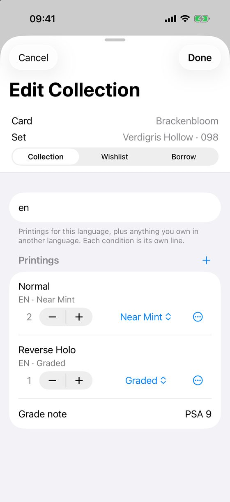
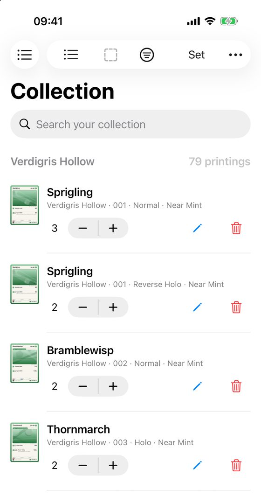

Record the cards you own
Deck & Collect counts every copy exactly as you own it. A normal card and a reverse holo of the same card are two lines, and so are two conditions.
Add a card to your collection
- Open the card on Cards.
- Tap Collection…. The card sheet opens on its Collection tab.
- Find the line for the printing you have, for example Normal or Reverse Holo.
- Tap + once for each copy.
- If the condition is not Near Mint, use the condition menu on that line.
- Tap Done.

Every tap on + or − is saved at once. There is no Save button on this tab, and Cancel cannot undo the taps. Tap the other way to take a copy off.
You can also reach the sheet from the pencil button on a row of the Collection screen, from the count on a card tile, and from the card's context menu (press and hold, or right-click on a Mac).
What each line records
- Printing and type. Normal, Holo, Reverse Holo and so on. The sheet lists the types the set has. To change a line's type, use its ⋯ menu and choose Type. All copies on that line move.
- Language. The Language field at the top decides which printings are offered. Copies you own in another language are listed below, marked for example JA. To move a line to another language, use ⋯ ▸ Change Language… and type a language code such as en, ja or de.
- Condition. A menu on each line, with Near Mint as the first choice. Changing it moves the copies on that line.
- Graded cards. Set the condition to Graded. A Grade note field appears. Write what you like, for example PSA 9. It is saved when you press Return or tap Done.
- Another printing or condition. Tap + next to Printings.
Lent and borrowed cards
The Borrow tab of the card sheet records that you borrowed a card from a friend, or lent one. Add friends in the Friends section first. Borrowing never changes the number of cards you own.
Check your progress
The Collection screen shows the cards you own, with the count of each, and a line such as 69 of 180 owned for each set. Use the list and grid buttons at the top to change the view.

Lots of cards?
On iPhone and iPad, the scanner adds cards with the camera. On a Mac there is no scanner, so cards go in one at a time.